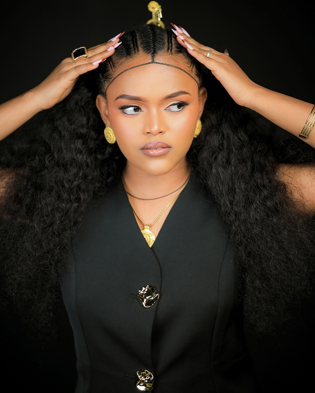

About Me
I am a visual storyteller specializing in photography and cinematic video editing. I focus on capturing authentic moments and creating content that feels modern and minimal. With 3 years of experience, I craft imagery that balances style, emotion, and simplicity.
Scroll down to see my work